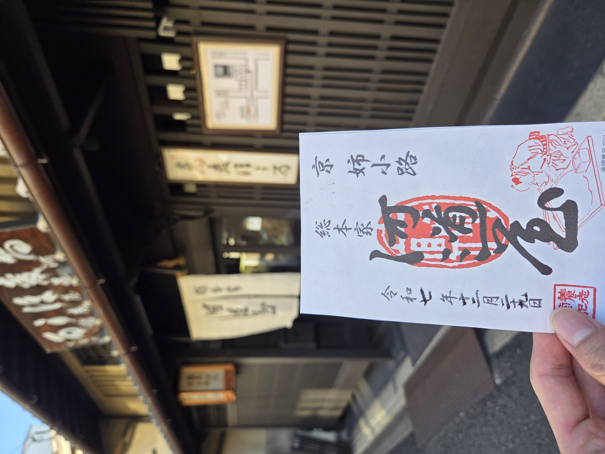

メニュー
＜
100名城訪問記録
続100名城訪問記録
城カード(100名城)
城カード(続100名城)
城メダル取得記録
御翔印取得記録
📍 現在地へ
御菓印 取得記録

🏠 記録を登録する
エリア選択
未選択
北海道
東北
東京
関東
信越・北陸
中部
京都
近畿
中国
四国
九州
お店選択
訪れた日付
データを保存
📊 訪問データの表示
非表示
ID順で表示
日付順で表示
🚩 未訪問のお店
未訪問のお店を表示
⚙️ データ管理
削除リストを表示
CSV書き出し
CSV読み込み
全記録リセット
読み込んだデータを追加する